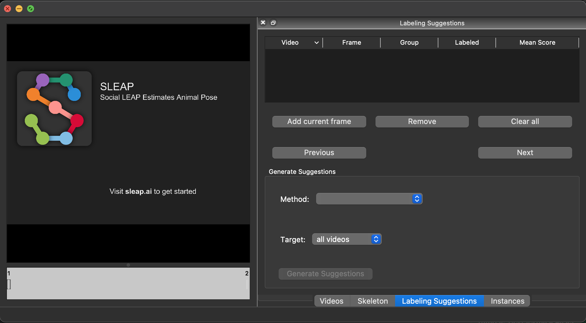
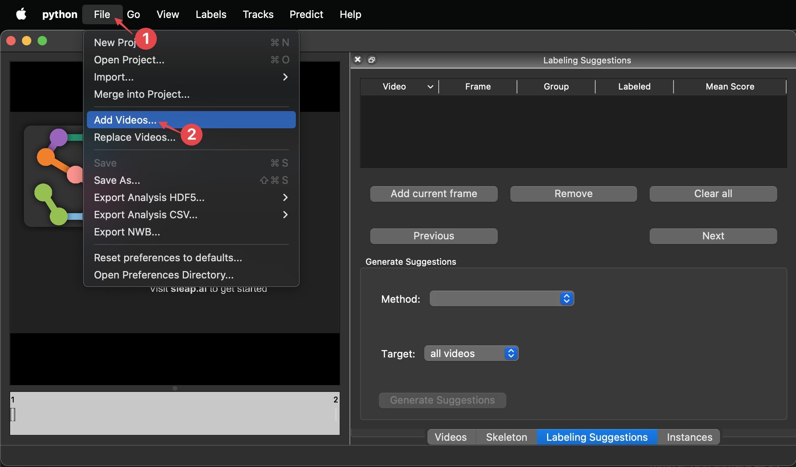
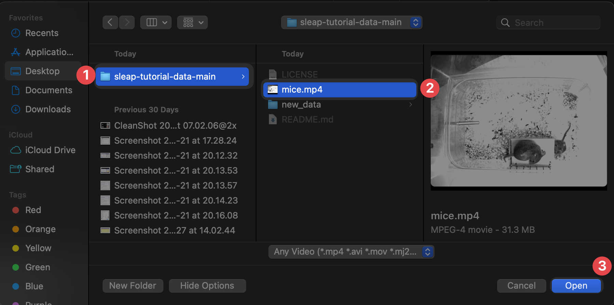
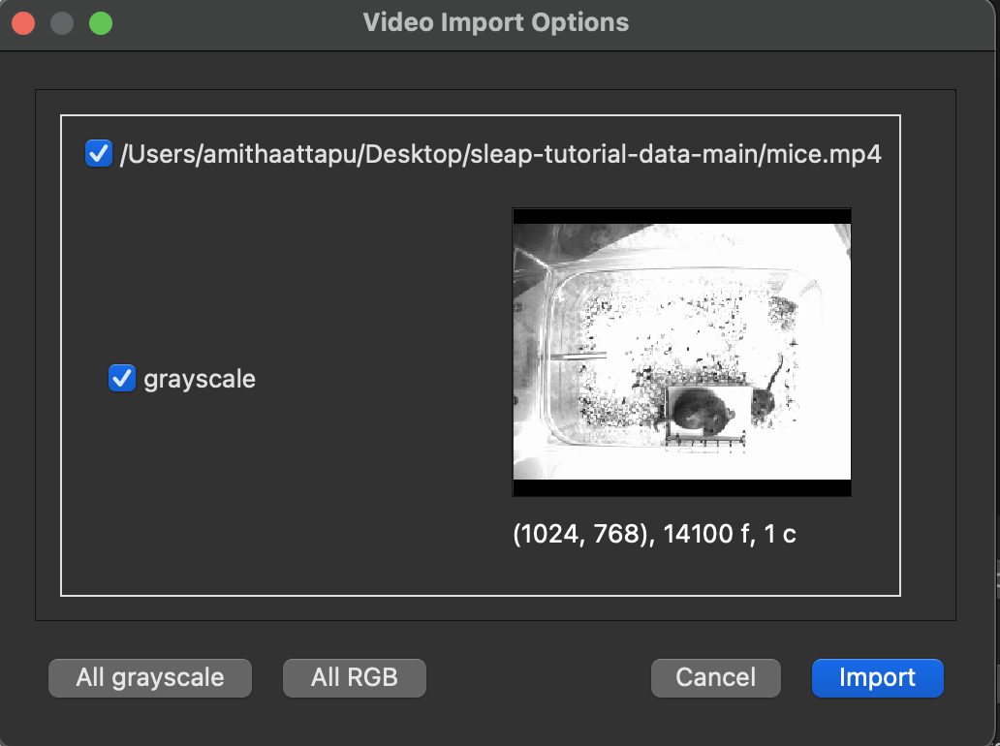
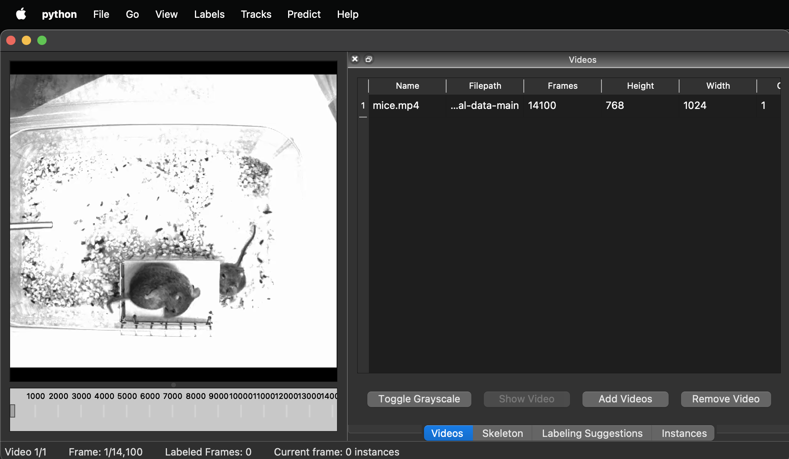
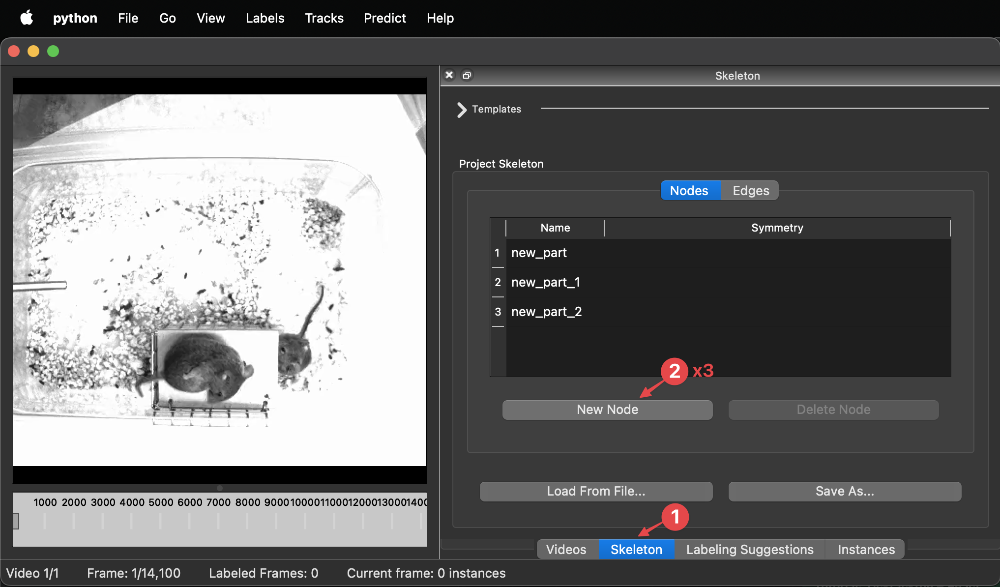
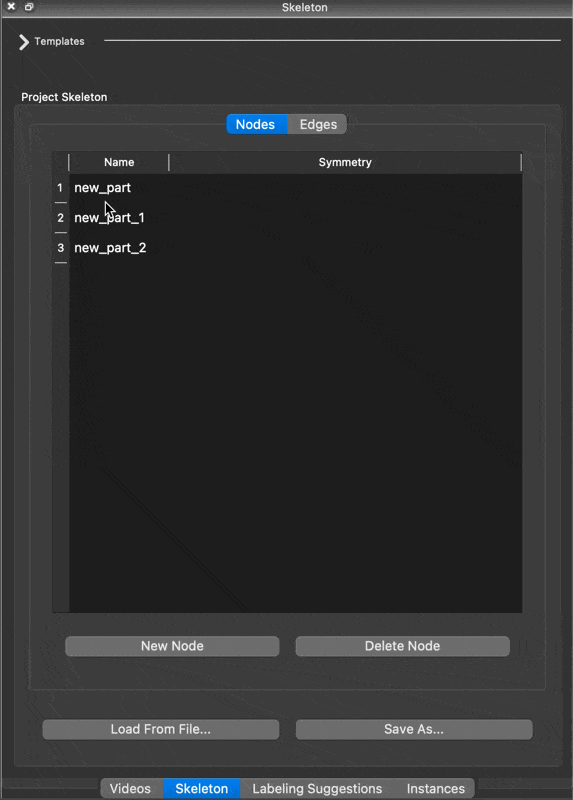
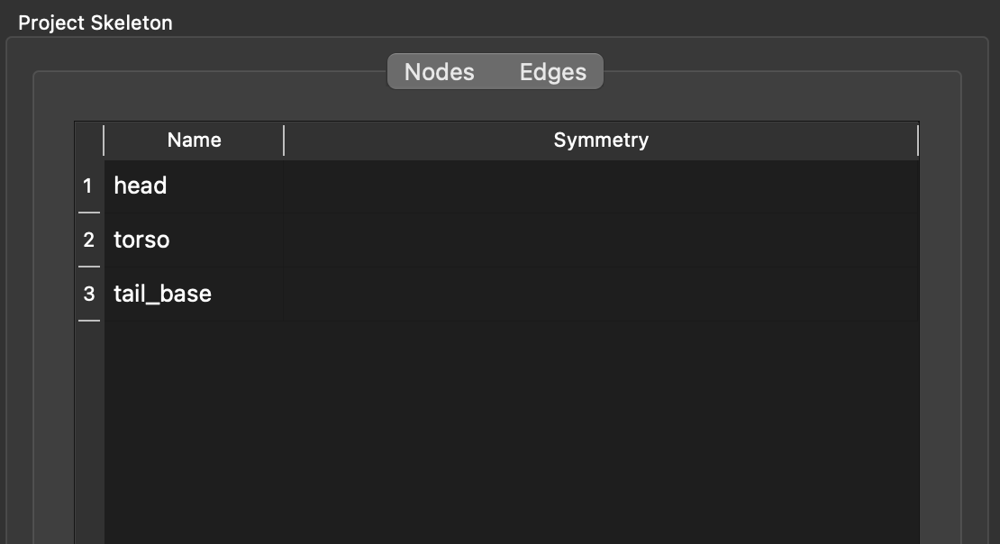
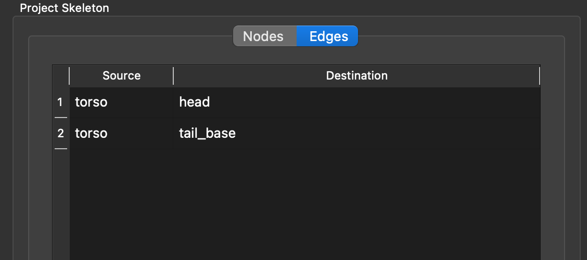

Importing data
The input to SLEAP are video files, so we'll first need to load some data to work with. For this tutorial, we've prepared a couple of videos that represent a typical behavioral setup in the lab.
Download the Data¶
To follow this tutorial, you need to download the required data by cloning a Git repository. Don’t worry if you’ve never used Git or a terminal before—just follow the steps below carefully.
1. Open a Terminal¶
You will need to enter commands in a terminal. If you're unsure how to open one, follow these instructions:
How to open a terminal:¶
Open the Start menu and search for Command Prompt.
Press Ctrl + Alt + T to open a new terminal.
Press Cmd + Space, then type Terminal and open it.
2. Check If Git Is Installed¶
Once your terminal is open, check if Git is already installed by typing:
git --version
How to Install Git:
- Download the Git for Windows installer from git-scm.com.
- Run the installer and follow the default settings.
- Once installed, restart your terminal and run 'git --version' in terminal to confirm the installation.
- Open a terminal and type:
If you don’t have Homebrew installed, first install it by running:brew install git
/bin/bash -c "$(curl -fsSL https://raw.githubusercontent.com/Homebrew/install/HEAD/install.sh)"
Open a terminal and type:
sudo apt update && sudo apt install git
Open a terminal and type:
sudo dnf install git
Once Git is installed, you're ready to proceed!
3. Navigate to the Desired Location¶
Navigate to Desktop folder, to clone the git repository. This step ensures tutorial data is saved in Desktop:
cd C:\Users\YourUsername\Desktop
YourUsername with your actual Windows username.
cd ~/Desktop
4. Clone the Repository¶
Now, type the following command and press Enter:
git clone https://github.com/talmolab/sleap-tutorial-data.git
The cloned folder/tutorial data will be located on the Desktop under the name sleap-tutorial-data-main. The folder will contain the following:
- mice.mp4: The main video file for training the model.
- new_data: This folder will be used later in Step 6.
Import videos into SLEAP¶
-
Open a terminal. Then launch the SLEAP GUI by typing this command followed by Enter or Return:
uv run sleap-labelIf you installed SLEAP with pip
Make sure to first activate the SLEAP conda environment:
conda activate sleapThen you can launch the GUI with:
sleap-label
-
Go to File → Add Videos... to open the file browser.

-
Open the mice.mp4 from the git cloned folder sleap-tutorial-data-main. For future reference, SLEAP currently supports mp4, avi, and h5 files1.

-
The video import interface will appear. Click Import to finish adding the videos.

You'll now see the first video in the GUI:

Configure skeleton¶
-
Click on the Skeleton tab on the right, then click on New Node three times to create three entries in the table.

-
For each node, double-click on the name to edit it, then Enter to save.
Name them head, torso, and tail_base.

-
Switch to the Edges tab and add connections: torso → head, and torso → tail_base.
The final skeleton setup should look like this:


You did it!
-
SLEAP currently supports mp4, avi, and h5 files. For mp4 and avi files, you’ll be asked whether to import the video as grayscale. For h5 files, you’ll be asked the dataset and whether the video is stored with channels first or last. ↩